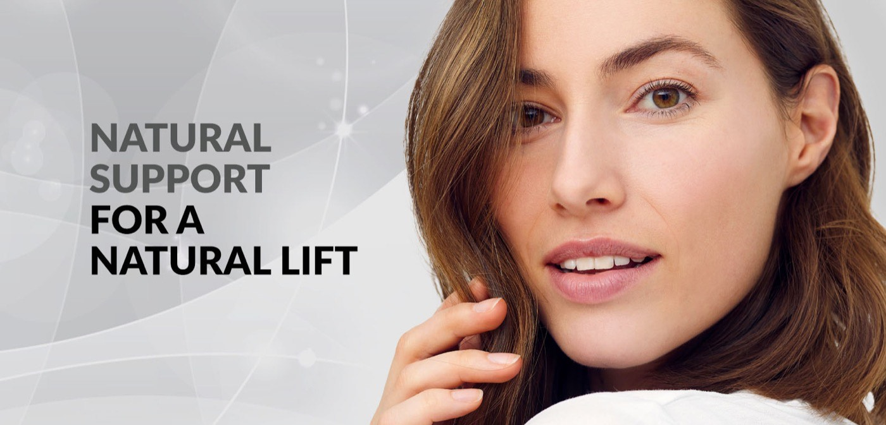
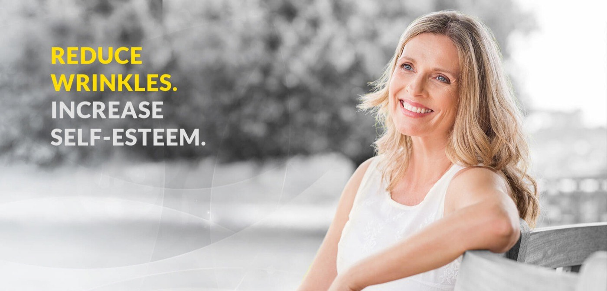
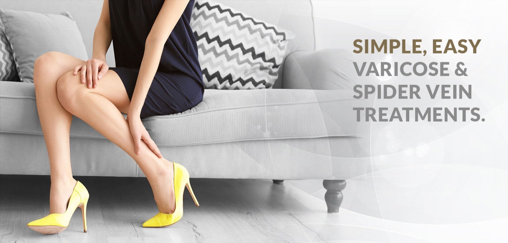
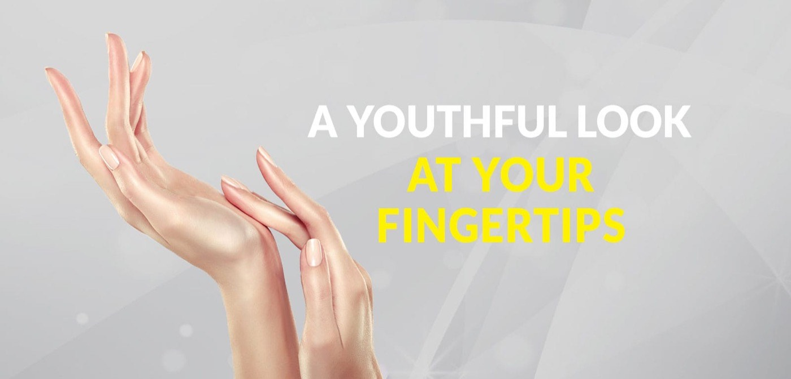

PDO thread lifts
A non-surgical option if you like the idea of a facelift but want something less invasive. Threads placed strategically under the skin improve the firmness of the skin.
Aesthetic and wellness treatments in Draper, Utah, led by a nurse practitioner with more than thirty years of medical experience.

You’re not a ‘patient number.’ You’re a neighbor, and we’re going to take care of you like one.
Look years younger and smooth out facial wrinkles with our injectable neurotoxins. Feel confident in your skin again with our help.
Keep your skin feeling plump and wrinkle-free with La Belle Vie’s injectable services in Utah.
Sculptra works differently from a filler. It is injected as biocompatible poly-L-lactic acid into the skin’s deep layers, triggering skin cells to produce more collagen. Improvements appear gradually, about four to six weeks after treatment, and can last up to two years. Sculptra is not a permanent solution for deep wrinkles.
Renuva uses an FDA-regulated, purified adipose matrix that acts like a microscopic honeycomb scaffold. Over the following three to six months the matrix disappears, leaving behind only your own natural fat.
Sexual wellness is a vital part of your overall health, confidence, and quality of life. Women’s health here is approached with expertise, compassion, and discretion, in a supportive, judgment-free environment.
Clitoxin. A non-surgical treatment developed by Dr. Charles Runels that uses BOTOX or other FDA-approved neurotoxins off-label to enhance clitoral function and orgasmic response. The neurotoxin works by gently relaxing specific muscles around the clitoris, allowing for increased blood flow and heightened sensitivity. The appointment is usually completed in under one hour, and a topical anesthetic is applied for comfort.
The practice’s own note on Clitoxin. Keep in mind that results are not guaranteed with this therapy. While many women have experienced positive outcomes, it is important to have realistic expectations for this promising new use of botulinum toxin.
O-Shot. A PRP injection treatment that uses growth factors from your own blood to rejuvenate vaginal and clitoral tissue. After a small blood draw, the platelet-rich plasma is separated and injected into areas associated with sensation, lubrication, and sexual response. It is a hormone-free option. Results typically last 12 to 18 months, though individual results may vary. A topical numbing cream is applied beforehand and the appointment usually takes less than an hour.
Women come to us about decreased libido, difficulty reaching orgasm, vaginal dryness, pain during intercourse, mild urinary leakage, and decreased sensitivity after childbirth or menopause.
Acne laser treatments, age spot removal, CO2 laser treatments and IPL photofacials, tailored to your skin.
Acne scars. Multiple strategies, from minimally invasive treatments through to more aggressive work for deeply scarred tissue. Profound by Syneron combines micro-diameter needles with focused RF energy delivered deep into the dermis to trigger new collagen, with three to five days of downtime.
Age spots. Most benign pigmented lesions of cosmetic concern can be treated with the Harmony XL light treatment. Short pulses of visible light raise the temperature in concentrated melanin enough to shatter the cells containing it, and the body replaces them with new cells from the surrounding untreated area.
CO2 and CO2 Lite. Laser resurfacing for a smoother texture, improved tone, smaller pores and the appearance of scars, lines and deep wrinkles. CO2 Lite covers fine lines, acne scars and sun spots with less downtime than the full CO2 treatment.
IPL photofacial. Light penetrates the skin’s surface, collagen and blood vessels below constrict, red pigment and dark age spots are drawn out, and the light stimulates collagen production.
Laser hair removal. Long-term hair reduction for legs, underarms, bikini area, upper lip, chin, neck, back and stomach. Comfort measures are used throughout, and your provider will tell you what to expect before you book a course.
From our signature non-surgical facelifts to revitalizing facials, La Belle Vie is your one-stop destination for aesthetic treatments.
PRP facials use your body’s own rich plasma to trigger collagen production. Microneedling is, as Kelly puts it, like a gym workout for your skin. Chemical peels run from a light lunchtime peel through to deeper work.
When you feel your best, it shows in every way. With Vitamin B12 shots and IV therapy designed to restore energy and hydration, you’ll feel radiant, revitalized, and balanced from the inside out.
Men’s health services are available by consultation. These are prescription and device-based treatments, so whether one is right for you is determined at your appointment.
A few of our most popular services, the ones patients return to us for again and again.

A non-surgical option if you like the idea of a facelift but want something less invasive. Threads placed strategically under the skin improve the firmness of the skin.

An innovative procedure that does not require anesthesia. You can resume normal activities immediately, without surgery or downtime.
Cosmetic injectables and fillers lift and smooth lines. Our trained and experienced staff are experts in the art of natural looking enhancements. We won’t leave you over-plumped or frozen-faced.
Lip work here ranges from filler through to the Lip Flip, which uses a tiny bit of Botox to relax the upper lip.

A non-surgical treatment using hyaluronic acid to reduce dark circles, hollows and fine lines. It restores volume and smooths the under-eye area, with minimal downtime.

Hands go through a lifetime of sun, water and daily wear. The most severe changes are typically due to loss of tissue volume over the years.
Owner and provider at La Belle Vie. The words on this page are her own.
With over 30 years of experience, Kelly brings her lifetime of medical background to La Belle Vie every day. Kelly is certified as a Family Nurse Practitioner and has advanced aesthetic training in multiple procedures.
My philosophy at La Belle Vie isn’t about changing who you are; it’s about Artistic Restoration. It’s about looking in the mirror and finally seeing the person you feel like on the inside: vibrant, rested, and ready for whatever life throws at you.
We’ve all seen the ‘overfilled’ look on social media, and honestly? We’re not fans of it either. We aren’t trying to give you a 20-year-old’s face; we’re trying to give you your face on its very best day.
One of the reasons people feel hesitant is the ‘conveyor belt’ feel of some big med spa chains. At La Belle Vie, we do things differently. We don’t just sell ‘packages.’ We create a roadmap that is specific to your face and your goals.
Because I am a Nurse Practitioner, your safety and medical history are always the top priority. We understand your health and wellness concerns can be some of the most emotionally intimate topics you’ll ever discuss with a medical provider, and the team listens to your needs before recommending any treatment.
At the end of the day, we aren’t in the business of needles and lasers. We’re in the business of confidence.
Medical weight loss is not dieting. It’s not about willpower, restriction, or punishing yourself for existing in your body. We’re not here to sell you a quick fix or make you feel bad about yourself.
While we don’t prescribe Ozempic at La Belle Vie, we proudly support patients who are using it. What we offer is guided medical weight loss and education alongside medication prescribed elsewhere.
I don’t believe in shame, trends, or one-size-fits-all solutions when it comes to weight loss.
These are the hours the practice publishes. Call to check availability outside them.
The fastest way to reach us.